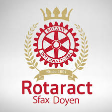

XTREM avec IEEE
L'événement XTREM organisé avec IEEE était un concours intensif de programmation et d'innovation. Les participants ont collaboré en équipes pour résoudre des problèmes complexes et créer des solutions innovantes en un temps limité. Ce fut une expérience enrichissante qui a mis en avant l'esprit d'équipe et la créativité.
Conférences
- Prise de parole en public : Participation avec le club Roteract Doyen.
- How to Start My Business : Conférence organisée par le club Tunivisions.
|  |  |
Événements Sociaux
J'ai participé à un événement pour soutenir les femmes atteintes du cancer du sein. Cet événement visait à sensibiliser, accompagner et aider les femmes dans leur combat contre la maladie.